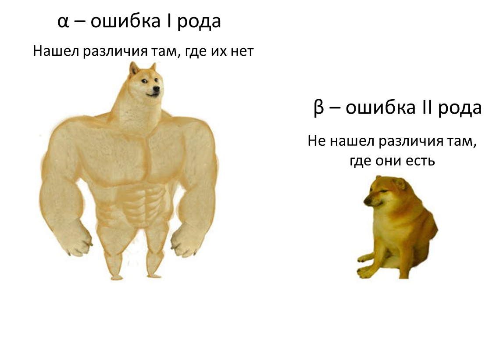
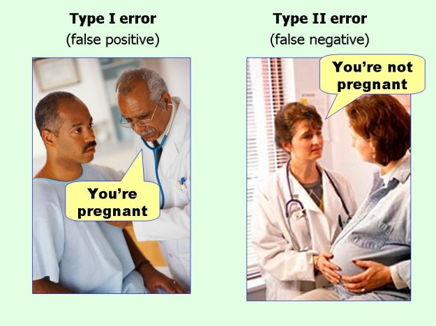
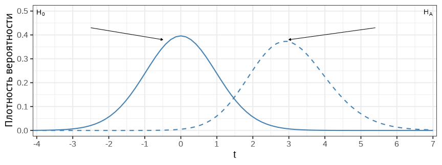
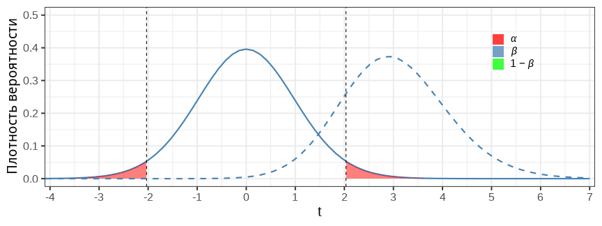
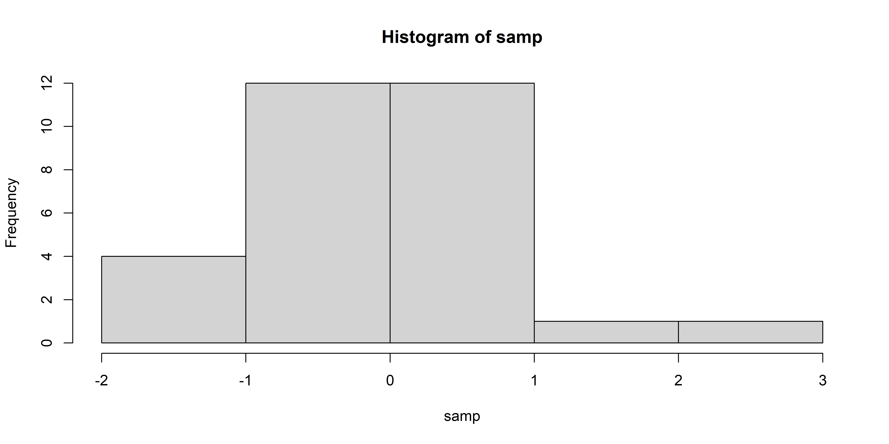
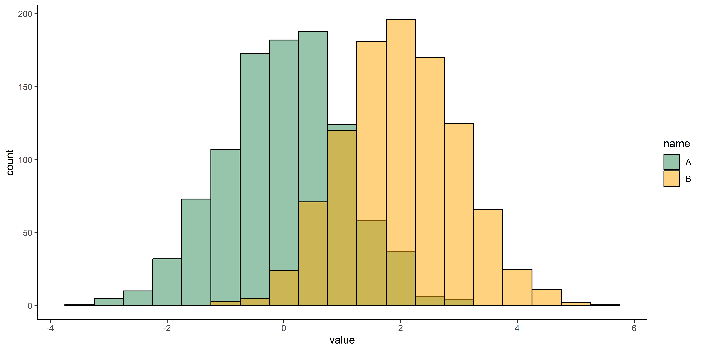
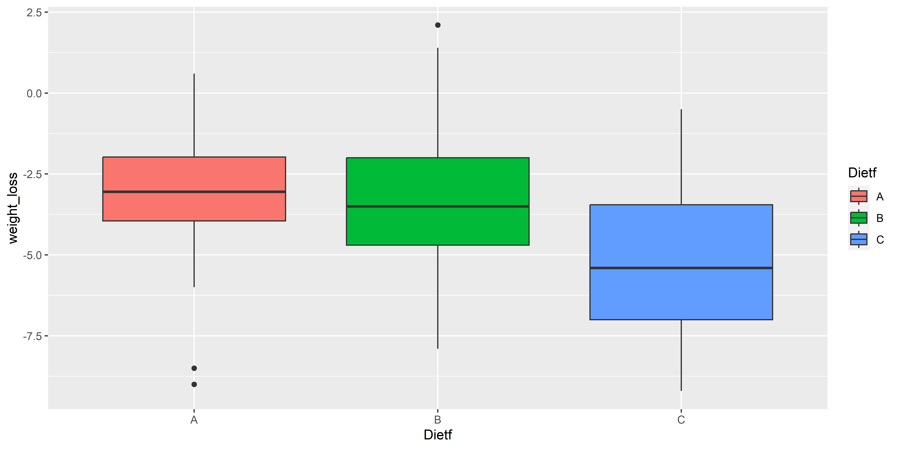

Двухвыборочный зависимый t-тест — очень похож на одновыборочный t-тест, только для разницы между связанными значениями. Поскольку наша нулевая гипотеза звучит, что средние должны быть равны:
\(H_0: \mu_1 = \mu_2\),
то при верности нулевой гипотезы \(\mu_1 - \mu_2 = 0\)
Тогда вместо \(x\) подставим \(d\) — разницу (вектор разниц) между парами значений. Получаем такую формулу:
Нам нужен тест Стьюдента для зависимых выборок, поскольку в группах одни и те же люди до диеты и после. По факту в этом тесте мы сравниваем разницу между весом после диеты и до диеты с 0.
Paired t-test
data: diet1$pre.weight and diet1$weight6weeks
t = 7.2168, df = 23, p-value = 2.397e-07
alternative hypothesis: true mean difference is not equal to 0
95 percent confidence interval:
2.354069 4.245931
sample estimates:
mean difference
3.3
Ошибки первого и второго рода
Ошибка I рода: нашли то, чего нет
Ошибка II рода: не нашли то, что есть
H0 верна (различий нет)
H0 неверна (различие есть)
Не отклонить H0
True Negative
False Negative - ошибка II рода (β)
Отклонить H0
False Positive - ошибка I рода (α)
True Positive
Какая ошибка хуже? Зависит от ситуации.
Например, меня всегда учили, что при проведении RNA-seq эксперимента ошибка второго рода хуже (потратили ресурсы, а результаты не нашли).
В медицине обе ошибки могут стоить очень дорого.
Ошибки первого и второго рода

Ошибки первого и второго рода

Дальнейшие несколько слайдов взяты из презентации Марины Варфоломеевой.
Можно построить теоретические распределения при H0 и HA

Распределение статистики, когда справедлива H0, нам уже знакомо — его мы используем в тестах. Но может быть справедлива HA и ее тоже можно описать своим распределением.
При помощи этих распределений можно определить вероятность ошибок различных типов.
Ошибка I рода — найти различия там, где их нет

\(\alpha\) (критический уровень значимости) — это вероятность ошибки I рода. Если
H0 справедлива, то при \(\alpha = 0.05\) мы отвергаем ее с 5% вероятностью.
Чтобы снизить вероятность таких ошибок, можно уменьшить \(\alpha\).
Ошибка II рода —не найти различий, где они есть
\(\beta\) — вероятность ошибки II рода.
Считается, что допустимо \(\beta \leq 0.2\), но часто про нее забывают.
Если мы уменьшаем α (график справа), то возрастает β.
Мощность теста — вероятность найти различия, если они есть
\(Power = 1 - \beta\) - мощность теста.
Хорошо, когда мощность не меньше 0.8.
Мощность теста зависит от величины наблюдаемого эффекта (от величины различий) и размера выборки.
Ограничения теста Стьюдента
Нормальность распределения - под вопросом.
Независимость наблюдений - очень важно.
Равенство дисперсий - необязательно для теста Велча.
Нужно ли нормальное распределение для t-теста?
Давайте сначала оценим вероятность ошибки первого рода, когда мы многократно (10000 раз) извлекаем две выборки объемом 30 значений из стандартного нормального распределения и сравниваем их t-тестом:
Генеральная совокупность одинаковая, следовательно мы ожидаем найти отличия не более чем в 5% случаев.
В нормальном распределении точки должны располагаться на синей линии.
Попробуем отрисовать гистограмму
hist(samp)

Вывод: не всегда графический способ позволяет определить принадлежность данных нормальному распределению, поскольку при малых объемах выборки даже настоящее нормальное распределение может не выглядеть как нормальное.
Тест Шапиро-Уилка (Shapiro-Wilk) для проверки на нормальность
shapiro.test(samp)
Shapiro-Wilk normality test
data: samp
W = 0.94952, p-value = 0.1641
В нашем случае p-value больше 0.05, что логично: мы взяли эту выборку именно из нормального распределения. Если p-value меньше уровня \(\alpha\), который у нас стандартно 0.05, то мы можем отвергнуть нулевую гипотезу о том, что выборка взята из нормального распределения.
Warning
Однако тест Шапиро-Уилка это такой же статистический тест, как и другие, следовательно, чем больше выборка, тем с большей вероятностью он найдет отклонения от нормальности.
Непараметрические тесты
Тем не менее, бывают ситуации, когда тест Стьюдента неприменим, например в случае явных выбросов. В таком случае можно использовать непараметрический аналог - тест Манна-Уитни.
Кроме того, непараметрические методы подходят для интервальных и ранговых шкал, где арифметическое среднее не имеет физического смысла.
Непараметрические тесты не опираются на параметры заранее известных распределений (например нормального), следовательно, более устойчивы к нарушению предположений параметрических тестов.
Тест Манна-Уитни (Mann-Whitney): теория
H0: \(P(A > B) = 0.5\) вероятность того, что случайное число из распределения A больше, чем случайное число из распределения B равно 50%.
H1: \(P(A > B) \neq 0.5\) вероятность, что случайное число из A больше чем B не равно 50%, следовательно распределения A и B отличаются сдвигом местоположения.
Иллюстрация:

Тест Манна-Уитни (Mann-Whitney): формула
Числа из обеих выборок ранжируются, то есть расставляются по порядку и самому наименьшему числу присваивается ранг 1, следующему 2, и так далее. Затем вычисляется тестовая U-статистика.
Для независимых выборок - функция wilcox.test(), синтаксис такой же как и для t.test():
Warning in wilcox.test.default(x = DATA[[1L]], y = DATA[[2L]], ...): не могу
подсчитать точное p-значение при наличии повторяющихся наблюдений
Wilcoxon rank sum test with continuity correction
data: wc3_units_armor$hp by wc3_units_armor$armor_type
W = 78.5, p-value = 0.01472
alternative hypothesis: true location shift is not equal to 0
В случае повторяющихся значений есть несколько стратегий вычисления рангов, в нашем случае присваются дробные ранги.
Визуализация данных и проверка на нормальность распределения
Wilcoxon signed rank test with continuity correction
data: diet1$pre.weight and diet1$weight6weeks
V = 299, p-value = 2.203e-05
alternative hypothesis: true location shift is not equal to 0
У непараметрических тестов меньше мощность из-за редуцирования информации при переводе в ранги.
# вспомним результат t-тестаt.test(diet1$pre.weight, diet1$weight6weeks, paired =TRUE)$p.value
[1] 2.396734e-07
Дисперсионный анализ (ANOVA)
Дисперсионный анализ (analysis of variance, ANOVA) — метод для сравнения средних в трех и более группах.
Виды дисперсионного анализа:
Однофакторный (one-way)
Двухфакторный (two-way)
MANOVA (Multivariate analysis of variance)
ANCOVA
Мы будем подробно рассматривать первые два.
Однофакторный дисперсионный анализ
Однофакторный дисперсионный анализ: данные
Допустим, мы хотим сравнить средюю потерю веса для различных диет.
Терминология: потеря веса является зависимой переменной, тип диеты - независимая переменная. Зависимая переменная - непрерывная, независимая - категориальная.
1 этап: формулировка нулевой и альтернативной гипотезы.
H0: все средние равны. \(\mu_1 = \mu_2 = \mu_3\)
H1: хотя бы одно среднее не равно остальным.
Для начала проверим, сколько наблюдений для каждой из диет:
diet %>%count(Diet)
# A tibble: 3 × 2
Diet n
<dbl> <int>
1 1 24
2 2 27
3 3 27
3 группы. Данные сбалансированы (то есть примерно одинаковое количество наблюдений для каждой группы), это важно для дисперсионного анализа.
Однофакторный дисперсионный анализ: подготовка данных
diet %>%ggplot(aes(Dietf, weight_loss, fill = Dietf))+geom_boxplot()

Похоже, что диета C отличается от остальных. Давайте теперь проверим статистически!
Однофакторный дисперсионный анализ: код
Используем встроенную в base R функцию aov() (analysis of variance).
aov(weight_loss ~ Dietf, data = diet)
Call:
aov(formula = weight_loss ~ Dietf, data = diet)
Terms:
Dietf Residuals
Sum of Squares 60.5270 410.4018
Deg. of Freedom 2 73
Residual standard error: 2.371064
Estimated effects may be unbalanced
Однофакторный дисперсионный анализ: формула
Степени свободы
Суммы квадратов
Средние квадраты
F-статистика
Межгрупповые
\(df_{b} = J - 1\)
\(SS_{b}\)
\(MS_{b} =\frac{SS_{b}}{df_{b}}\)
\(F=\frac{MS_{b}}{MS_{w}}\)
Внутригрупповые
\(df_{w} = N - J\)
\(SS_{w}\)
\(MS_{w} =\frac{SS_{w}}{df_{w}}\)
Общие
\(df_{t} = N - 1\)
\(SS_{t}= SS_{b} + SS_{w}\)
\(J\) означает количество групп, \(N\) - общее количество наблюдений во всех группах.
\(n_j\) означает количество наблюдений в группе \(j\), а \(x_{ij}\) - наблюдение под номером \(i\) в группе \(j\).
Однофакторный дисперсионный анализ: формула
Вариабельность обозначается \(SS\) и означает “сумму квадратов” (sum of squares) - почти тоже самое, что и дисперсия, только мы не делим в конце на количество наблюдений:
\[
SS = \sum\limits_{i=1}^{n_j} (x_{i}-\overline{x})^2
\]
Попробуем рассчитать самостоятельно по формулам, используя R.
Однофакторный дисперсионный анализ: код
Сохраним результат вызова aov() в переменную fit_diet, чтобы вызвать summary().
fit_diet <-aov(weight_loss ~ Dietf, data = diet)summary(fit_diet)
Df Sum Sq Mean Sq F value Pr(>F)
Dietf 2 60.5 30.264 5.383 0.0066 **
Residuals 73 410.4 5.622
---
Signif. codes: 0 '***' 0.001 '**' 0.01 '*' 0.05 '.' 0.1 ' ' 1
p-value < 0.05, следовательно, мы отклоняем нулевую гипотезу. Какие диеты отличаются между собой?
Постхок-тесты для дисперсионного анализа
Рекомендую использовать поправку Тьюки для определения, какие именно группы различаются.
Поправка Тьюки похожа на тест Стьюдента, однако различается формула расчета стандартного отклонения в знаменателе, поскольку учитывается вклад всех групп.
Функция TukeyHSD() принимает на вход объект класса aov.
TukeyHSD(fit_diet)
Tukey multiple comparisons of means
95% family-wise confidence level
Fit: aov(formula = weight_loss ~ Dietf, data = diet)
$Dietf
diff lwr upr p adj
B-A 0.032000 -1.589085 1.6530850 0.9987711
C-A -1.848148 -3.439554 -0.2567422 0.0188047
C-B -1.880148 -3.454614 -0.3056826 0.0152020
Итак, мы видим, что диета C отличается от A и от B, диеты A и B между собой не различаются.
В литературе по статистике можно встретить “правило”, якобы нельзя использовать поправку Тьюки перед выполнением ановы, но на самом деле это не так, если задача узнать, какие групры различаются, то можно использовать сразу Тьюки.